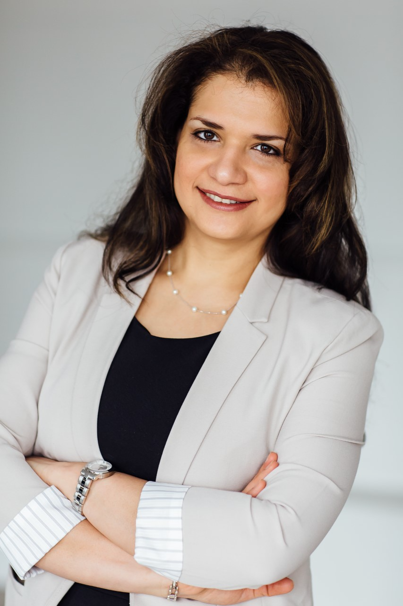
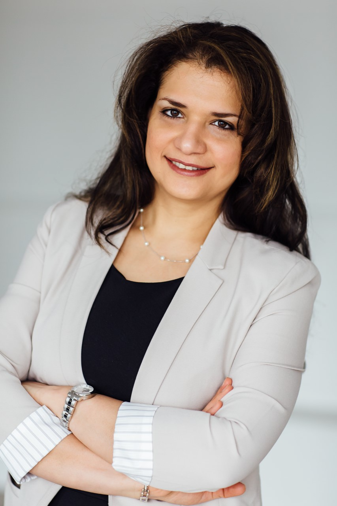

Every year, thousands of people seek to move to Canada, a wide-open country of opportunity. Whether you are looking for a temporary or permanent entry,
ViVo Canada Immigration Services can help you through your journey.
Our founder and CEO, Atieh Bahrami is a Regulated Canadian Immigration Consultant (RCIC) licensed by College of Immigration and Citizenship Consultants (CCIC).
She is also a registered Immigration Consultant in Québec. She speaks Persian, English, and French.
ViVo Canada Immigration Services primarily operates in the province of Québec. We’d be more than happy to assist you representing your visa application to the Canadian authorities.
We provide you professional services in each step of the process and make sure you choose the immigration program best fitted to your profile. Feel free to fill out our assessment
form or contact us to book a consultation.
Take a free statement
 
